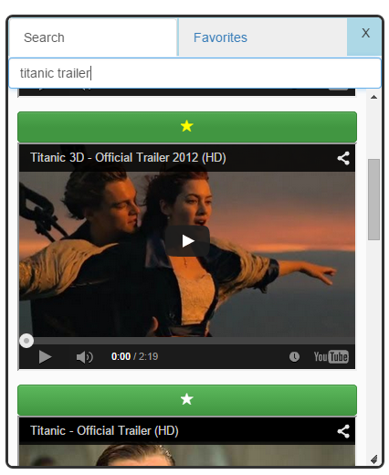

About Widgets:
1. Google Search
This widget allows users to search some content using google.
Logic:
The widgets appends the required search text to Google url and open its in new window.
2. Notepad
This widget allows users to create multiple notes.

3. Browser
This widget allows users to view diffeterent websites in the current page.
User may create any number of new tabs.
Thes size of the tab adjusts depending on the number of tabs.

Logic:
I used an IFrame for displaing the web content.
The size of the tab is adjusted by dividing the total width by the number of tabs currently showing.
4. Youtube
This widget allows users to search youtube videos and add them as a favorite.


Logic:
I used an IFrame for displaing the videos.
When ever the user clicks the star button above the video, the video's youtube ID will be stored in the favorites list.
This ID is used to display the videos again in the favorites tab.
5. Narrator
Narrator reads out any text entered in the text field.
Logic:
This is done using the text-to-speach API
6. Calculator
Calculator widget allows you to perform masic arithematic operations.
Logic:
Javascript eval() function plays the major role in developing this widget.
7. Setting
This widget allows users to change the background image, edit user information and change the password.


Logic:
On changing the user information or the password, the system checks if the user is logged in
and if so takes the changes to the server and updates the details.
A password change will be notified to the user by an email.
8. Messenger
This widget allows a registered user to communicate with other registered users.
The messenger widget shows the current logged in users by the online icon.
Logic:
Any message sent will be sent to server and added as a entry in the Message collection.
When a user logs in, the service asks the server each second, for the messages from and to the
current user. Hence gets updated after every entry is added.
9. Weather
This widget shows the current weather to the user. It includes the min and max temperatures.
Logic:
The weather data is received from the API
10. Stop Watch
This widget allows users to use a stop watch facility. It also has the lap time facility.

Logic:
This widget is devloped using AngularJS $interval service.
11. Email
Email widget allows the user to send an email from their gmail email id.
This widget requires users to verify the email ID. Else they have no access.
The user can save a email as a draft and get it back by clicking the load draft message.

Logic:
This widget asks fo the password of the mail id which is not saved. It is sent to server and used only for sending an email.
After sending, the password field is cleared.
This app depends on the user email settings. It may not work always.
12. Save
When clicked on the save icon, the current position of widget is saved.
When the user logs back in, the position of widgets remains.

Logic:
All the widget positions are collected and sent to the server and savd into the WidgetData collection.
13. Exit
When clicked on the the power button, if the user is loggedin he logs off and redirects to login screen,
else simply redirects to the login screen.
14. Hide Widgets
When clicked on the this button, all the showing widgets are minimized.
15. Date/Time
This time and date widget is always to the right of the task bar.
It hows the current date and time of the user. When mouse hovered, shows the day name as the tooltip.
Logic:
The javascript Date object is used for getting the current date and time of the user.